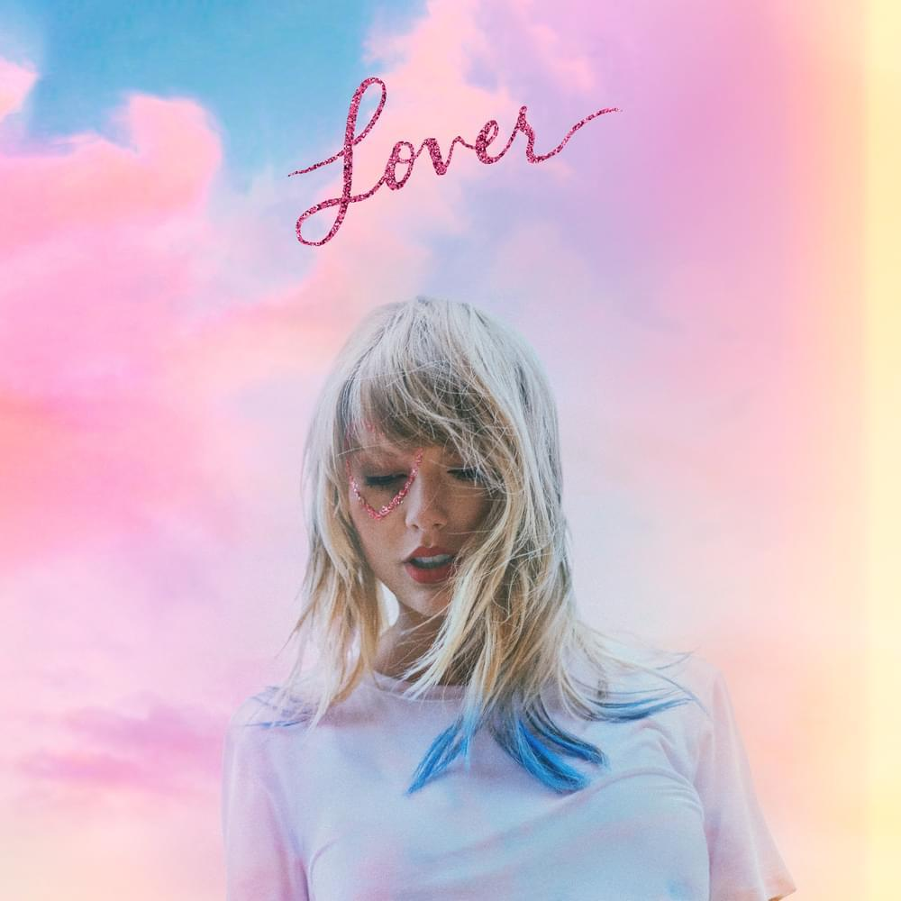

evermore (diciembre de 2020)

Lista de canciónes:
- willow (single)
- champagne problems
- gold rush
- 'tis the damn season
- tolerate it
- no body, no crime (feat. HAIM)
- happiness
- dorothea
- coney island (feat. The National)
- ivy
- cowboy like me
- long story short
- marjorie
- closure
- evermore (feat. Bon Iver)
- right were you left me (Deluxe Edition Bonus Track)
- it´s time to go (Deluxe Edition Bonus Track)
folklore (julio de 2020)

Lista de canciónes:
- the 1
- cardigan (single)
- the last american dinasty
- exile (feat. Bon Iver)
- my tears ricochet
- mirrorball
- seven
- august
- this is me trying
- illicit affairs
- invisible string
- mad woman
- epiphany
- betty
- hoax
- the lakes (Deluxe Edition Bonus Track)
Lover (2019)

Lista de canciónes:
- I Forgot That You Exsisted
- Cruel Summer
- Lover (Single)
- The Man (Single)
- The Archer
- I Think He Knows
- Miss Americana & The Heartbreak Prince
- Paper Rings
- Cornelia Street
- Death By A Thousend Cuts
- London Boy
- Soon You'll Get Better
- False God
- You Need To Calm Down (Single)
- Afterglow
- ME!
- It's Nice To Have A Friend
- Daylight